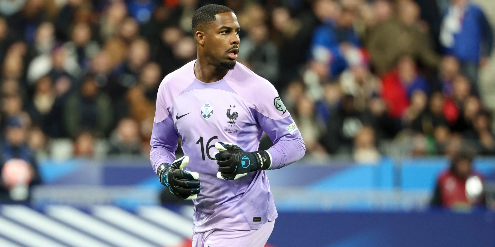

O Maignan é o goleiro da França número 16. Em seu primeiro jogo de 2023 defendeu um pênalti fácil contra a Holanda. Depois de Steve Mandanda se aposentar do time da França depois da copa do mundo em 2022. Maignan está no lugar do Mandanda. No 2º jogo dele, ele fez uma defesa espetacular contra a Irlanda no fim dos acréscimos do jogo que era a chance de Irlanda empatar com 1 a 1. Atualmente joga no Milan goleiro número 16.
